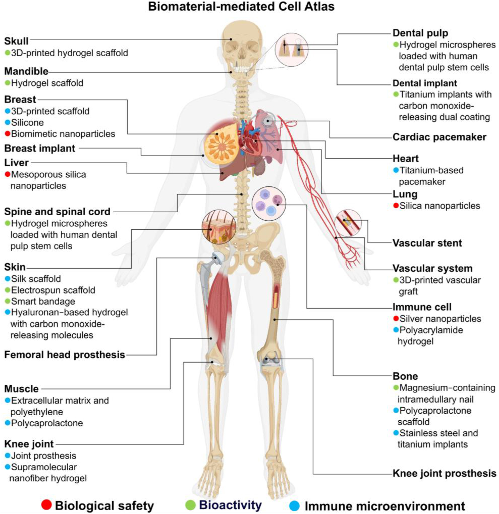
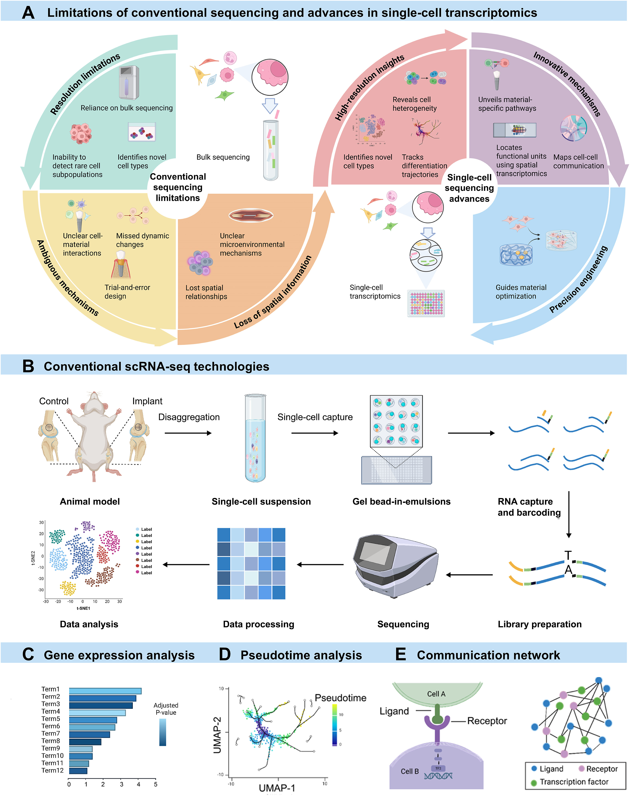
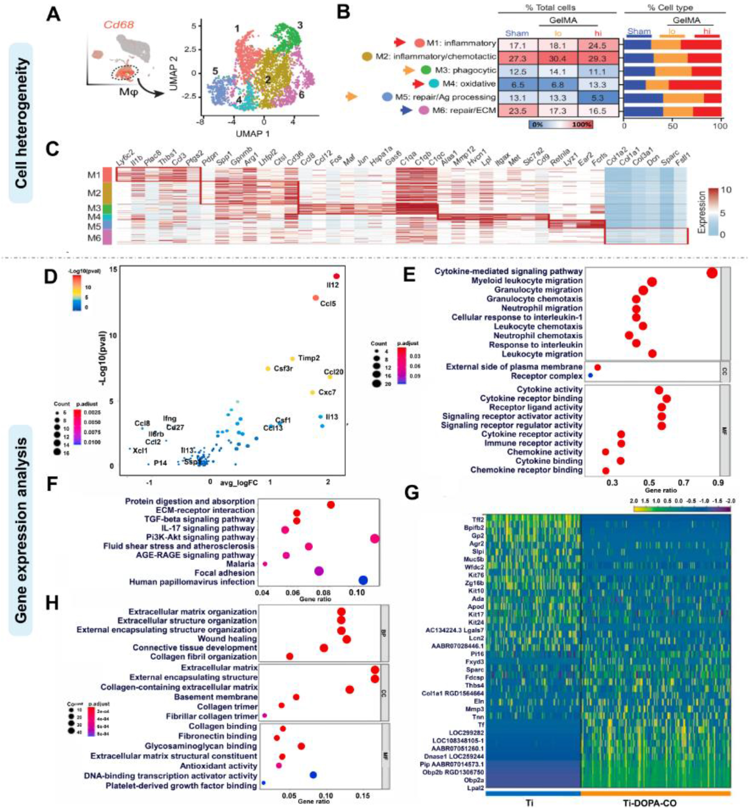
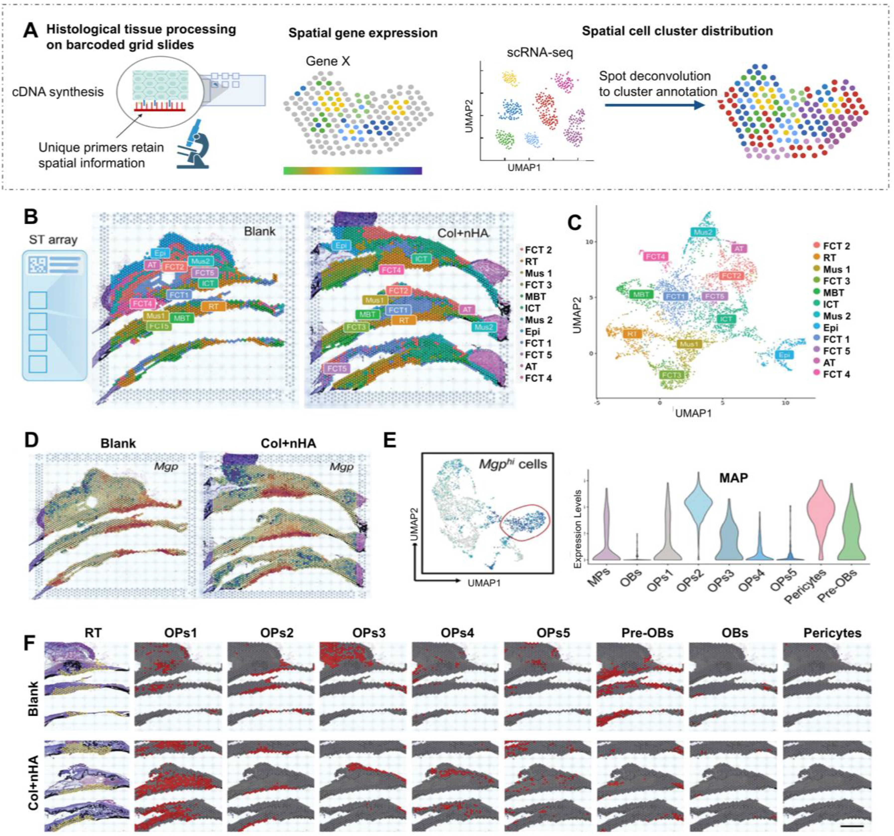
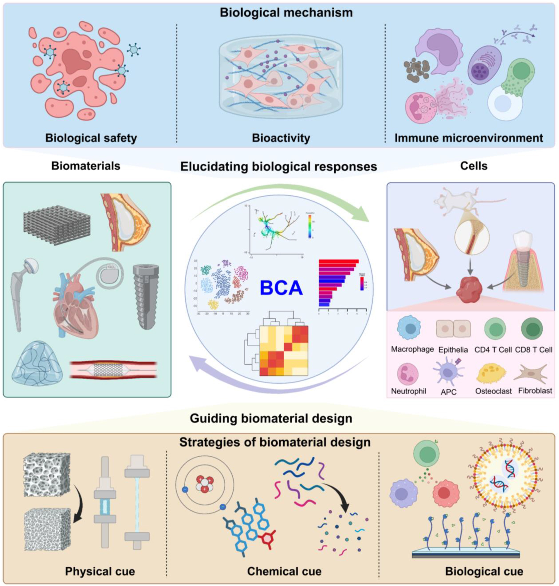
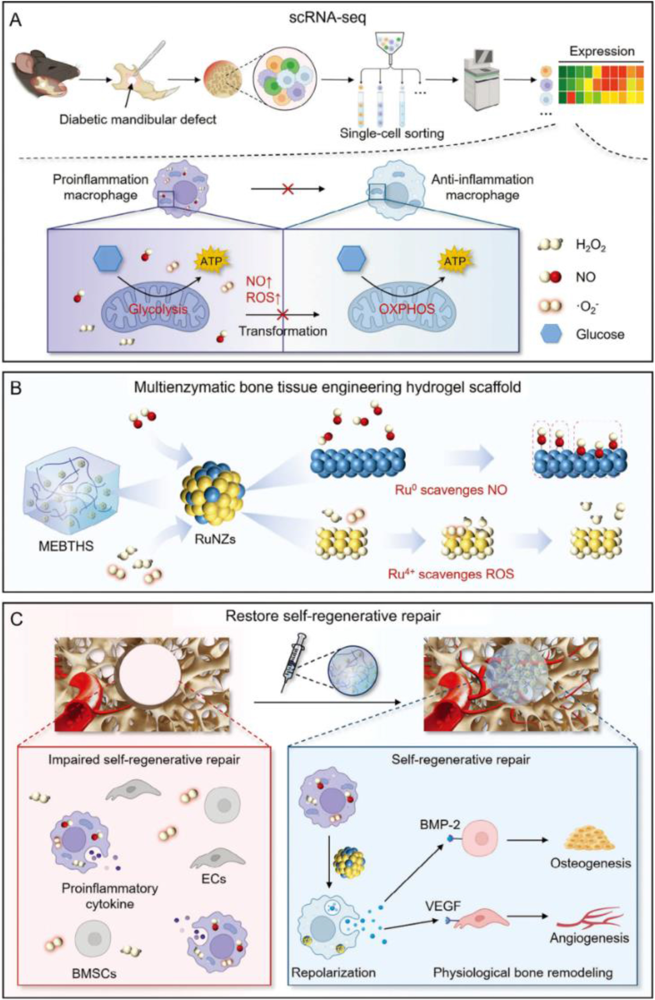
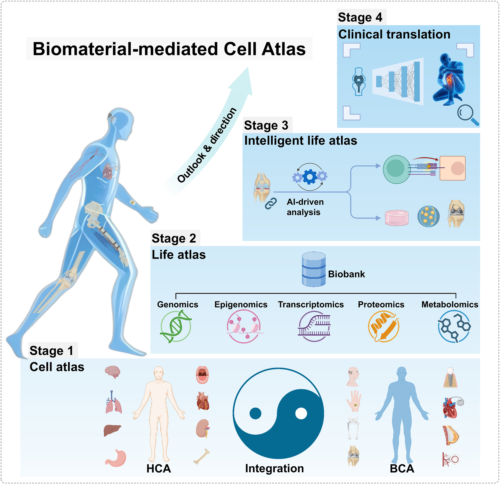

基本信息#
| 项目 | 内容 |
|---|---|
| 原文题名 | Biomaterial-mediated Cell Atlas: an insight from single-cell and spatial transcriptomics |
| 中文题名 | 生物材料介导的细胞图谱：来自单细胞和空间转录组学的启示 |
| 期刊 | Bioactive Materials |
| 发表信息 | 2025-08-08 online；2025 Dec, 54:1-33 |
| 作者 | Xiaokun Yang, Mingshu Huang, Huan Chen, Jingtao Dai, Jiahao Chen, Kai Chen, Jiannan Zhou, An Li, Ping Li |
| DOI | 10.1016/j.bioactmat.2025.07.047 |
| PubMed / PMC | PMID:40821937；PMCID:PMC12356410 |
| ScienceDirect | S2452199X25003470 |
| Zotero | Item key: KWQJCUND；PDF attachment: LGLUYJSV；ScienceDirect snapshot: YSPDCINJ |
| 文献类型 | Review article；开放获取，CC BY-NC-ND |
一句话结论#
这篇综述提出了 Biomaterial-mediated Cell Atlas, BCA 的概念：把植入物、支架、涂层、纳米材料等生物材料视为一种会重塑组织细胞生态的刺激源，用 scRNA-seq 和空间转录组描绘材料周围的细胞组成、状态转换、免疫通讯和空间分布，再把这些机制反馈到材料设计中。
研究问题与创新点#
核心问题#
传统生物材料研究常用 bulk transcriptomics、蛋白组、代谢组、组织学和免疫染色来评价材料效果，但这些方法容易把不同细胞群的信号平均掉。材料植入后的真实反应往往发生在局部微环境里：巨噬细胞、成纤维细胞、内皮细胞、MSC/骨祖细胞、T/B 细胞等群体同时变化，而且每个群体内部还有功能亚群。作者试图回答的是：如何用单细胞和空间组学把“材料-细胞-组织反应”系统化成可复用的图谱。
主要创新#
| 创新点 | 具体含义 |
|---|---|
| 提出 BCA 概念 | 不是简单复述 Human Cell Atlas，而是把生物材料的物理、化学、生物学线索纳入细胞图谱框架 |
| 把材料评价分成三个 biological effect 维度 | Biological safety、bioactivity、immune microenvironment，分别对应安全性、促再生活性和免疫微环境 |
| 强调 scRNA-seq 与空间转录组互补 | scRNA-seq 解析细胞类型和状态，空间技术定位材料界面附近的细胞生态位 |
| 把图谱转化为设计闭环 | 先用图谱找关键细胞/通路，再用涂层、支架、药物释放、纳米酶、因子递送等手段定向调控 |
| 对 biomaterial single-cell 文献做范围综述 | 文章说明从 PubMed、Web of Science、Embase 选取 48 篇相关研究，补充表整理了研究空白、方法和材料类型 |
样本与实验设计#
这篇文章是综述，不是原始实验研究。其证据基础来自已发表的 biomaterial single-cell/spatial transcriptomics 研究，覆盖纳米材料安全性、骨/皮肤/牙髓/心肌/椎间盘再生、植入物异物反应、感染/炎症相关材料反应、糖尿病骨缺损和骨关节炎等场景。
| 综述模块 | 主要材料/模型类型 | 单细胞或空间问题 |
|---|---|---|
| Biological safety | 银纳米颗粒、TiO2 纳米颗粒、SiO2/介孔硅纳米颗粒 | 免疫毒性、DNA repair/cell cycle、ROS、肺/肝免疫扰动 |
| Bioactivity | 胶原/纳米羟基磷灰石、水凝胶、镁基材料、智能绷带、牙髓/心肌/椎间盘工程材料 | 骨再生、皮肤愈合、牙髓再生、心肌组织工程、椎间盘修复 |
| Immune microenvironment | ECM scaffold、植入界面、骨-植入感染、种植体周围炎/牙周炎 | 巨噬细胞、成纤维细胞、单核细胞、Notch/配体受体通讯和炎症生态位 |
| Design guidance | Spp1/Cxcl12 scaffold、Ru nanozyme hydrogel、verteporfin-loaded PLGA NPs 等 | 从单细胞机制反推材料递送、免疫调节和代谢重编程策略 |
数据集/代码可用性核验表#
核验日期：2026-05-19。状态以 Zotero 本地附件、Crossref、PubMed/PMC E-utilities、PMC OA service、ScienceDirect/Elsevier CDN 和本地全文检索为准。
| paper | accession/resource | repository | data type | sample/group design | current access status | direct page link | direct download/request link | verification date | notes |
|---|---|---|---|---|---|---|---|---|---|
| Yang 2025 Bioactive Materials | DOI: 10.1016/j.bioactmat.2025.07.047 | DOI/Crossref/ScienceDirect | Article metadata | Review article | 已核验，可访问 | DOI；ScienceDirect | Crossref API | 2026-05-19 | Crossref、Zotero 和 ScienceDirect 的题名、卷、页、DOI一致 |
| Yang 2025 Bioactive Materials | PMID 40821937 / PMCID PMC12356410 | PubMed / PMC | Article record and OA full text | Review article | 公开，可读取元数据和 XML/PDF 记录 | PubMed；PMC | PMC OA service | 2026-05-19 | PubMed 标记为 Review；PMC OA service 显示有 PDF 和 OA package |
| Yang 2025 Bioactive Materials | mmc1.docx | Elsevier supplementary data / PMC supplement | Supplementary Fig. 1 and Supplementary Table 1 | 文献筛选流程和 48 篇 biomaterial single-cell 应用研究概览 | 公开，可直接下载；已保存到本地 attachments/ |
DOI landing | Elsevier supplement | 2026-05-19 | 补充表整理研究问题、方法、材料和引用，不是原始测序矩阵 |
| Yang 2025 Bioactive Materials | 本篇原始测序 accession | GEO/SRA/ENA/ArrayExpress/BioProject/GitHub 等 | scRNA-seq/ST raw data | 不适用 | 未发现本篇产生新原始测序数据 | 不适用 | 不适用 | 2026-05-19 | 全文检索未命中 GSE/PRJ/SRP/E-MTAB/CRA/HRA 等 accession；再分析需回溯被综述的各原始研究 |
| Yang 2025 Bioactive Materials | Zotero local PDF | Zotero local library | PDF full text | 33 页全文 | 本地可读，已用于精读 | Zotero item KWQJCUND |
PDF attachment LGLUYJSV |
2026-05-19 | Zotero full-text index 显示 33/33 页，约 185,939 字符 |
方法路线#
传统材料评价问题
-> bulk/组织层面平均信号难以解析细胞异质性
-> 引入 scRNA-seq
-> cell type/subtype annotation
-> DEG + GO/KEGG/GSEA/GSVA
-> pseudotime / RNA velocity
-> ligand-receptor communication
-> PPI/network analysis
-> 引入 spatial transcriptomics
-> 10x Visium / Slide-seq / MERFISH / seqFISH / Xenium 等
-> 把 scRNA-seq 细胞类型映射回材料-组织界面
-> 建立 BCA
-> biological safety
-> bioactivity
-> immune microenvironment
-> 反推材料设计
-> direct tissue activation
-> immune regulation
-> AI/multi-omics/digital twin 方向
主要结果精读#
Result 1：BCA 将 Human Cell Atlas 扩展到材料诱导的细胞响应#

图 1 对应结果： 这张图把 BCA 分成生物安全性、生物活性和免疫微环境三类响应，强调生物材料进入组织后并非静态支架，而是会持续与宿主细胞发生相互作用。图源：PMC12356410 / ScienceDirect 官方图像。
作者把 BCA 定义为一种连接材料科学和细胞生物学的框架：材料的表面形貌、硬度、降解产物、离子释放、药物/因子递送和生物活性涂层都会塑造局部细胞状态。BCA 的关键不是“多做一套单细胞图”，而是把材料线索和细胞图谱绑定起来，解释为什么同一种材料在不同组织、疾病状态或免疫环境中会产生不同效果。
这对你的生信/材料交叉方向很有用：如果研究对象是口腔种植体、骨再生支架、软组织封闭或异物反应，BCA 可以作为“实验设计和数据解释框架”。它要求至少同时回答三件事：材料改变了哪些细胞、这些细胞位于哪里、这些变化能否反推材料优化。
Result 2：scRNA-seq 是解析材料周围细胞异质性的基础工具#

图 2 对应结果： 图中概括了 bulk sequencing 与 single-cell sequencing 的差异，并把单细胞流程拆成细胞悬液、GEM/library、测序和分析，后续再接 DEG、拟时序和细胞通讯。图源：PMC12356410 / ScienceDirect 官方图像。
文章强调，bulk 数据会把材料周围不同细胞群的信号平均掉，尤其容易漏掉稀有亚群、过渡状态和材料界面特异反应。scRNA-seq 的价值在于把“材料有效/无效”的终点判断拆解为细胞层面的变化：哪些细胞增加，哪些细胞转为促炎/抗炎/成骨/成纤维状态，哪些配体-受体关系被材料改变。
在分析流程上，作者把常用任务整理为：细胞注释、差异基因、富集分析、拟时序、RNA velocity、CellPhoneDB/CellChat/NicheNet、STRING/PPI、Seurat/Scanpy/SingleR 等。对实际再分析而言，这篇可以当作 biomaterial scRNA-seq 的方法清单，但不能替代每个原始研究的数据质控和统计设计。
Result 3：单细胞结果需要从“细胞类型”推进到“状态、通路和通讯”#

图 3 对应结果： 图中用 GelMA wound model 和 Ti-DOPA-CO implant coating 两类案例说明，材料硬度、交联程度或功能涂层可以重塑巨噬细胞、成纤维细胞和细胞因子表达谱。图源：PMC12356410 / ScienceDirect 官方图像。
作者用多个案例说明，BCA 的分析不能停留在“UMAP 上有几个 cluster”。例如不同交联程度的 GelMA 会改变伤口巨噬细胞亚群比例；Ti-DOPA-CO 涂层会改变软组织界面的细胞因子谱，并与巨噬细胞 M2 极化、PI3K-Akt、ECM 组织和胶原合成相关。
我的理解是：这类结果的真正价值在于把材料参数和细胞功能状态联系起来。对于口腔种植或骨再生方向，类似逻辑可以转化成问题：不同表面处理是否改变 SPP1+ macrophage、MGP+ MSC/OP、CXCL/CCL chemokine fibroblast 或 endothelial angiogenic program；这种变化是否能解释软组织封闭、骨结合或炎症持续。
Result 4：空间转录组把材料界面中的关键细胞放回组织位置#

图 6 对应结果： 该图展示了空间转录组在骨缺损修复中的应用：先做组织空间聚类，再把 scRNA-seq 定义的 MSC/osteoprogenitor 亚群映射回缺损区域，识别具有空间偏好的 Mgp high MSC/OPs2。图源：PMC12356410 / ScienceDirect 官方图像。
scRNA-seq 的主要短板是组织解离会丢失空间位置，还可能引入应激基因表达和细胞损失。空间转录组可以弥补这一点：材料-组织界面最关心的是细胞在材料表面、纤维囊、骨缺损边缘、血管周围还是炎症灶中出现。作者以 collagen/nano-hydroxyapatite hydrogel 相关骨再生研究为例，说明空间数据能够定位 MSC 亚群和 Mgp 表达热点。
这对再分析特别重要。仅有单细胞数据时，我们可以说某个细胞群存在；加入空间数据后，才能说该群是否真正位于材料作用区域，是否靠近血管、免疫细胞、骨祖细胞或纤维化区域。对于种植体周围炎或植入周纤维化，空间定位往往比单纯 marker 更能说明机制。
Result 5：BCA 的目标是形成“机制发现 -> 材料优化”的反馈闭环#

图 7 对应结果： 图中把 BCA 连接到材料-细胞相互作用和下一代材料优化，强调生物学机制研究与材料设计之间应形成反馈，而不是两个割裂步骤。图源：PMC12356410 / ScienceDirect 官方图像。
文章把 BCA 的意义分成两层。第一层是解释生物响应：材料是否安全、是否促再生、是否造成异常免疫或纤维化。第二层是指导材料设计：识别关键细胞、关键通路和关键空间生态位后，通过材料成分、力学、表面形貌、涂层或递送系统定向调控。
这个框架比“材料 A 优于材料 B”的比较更强，因为它要求提出可验证机制。例如，如果单细胞发现材料诱导的骨修复依赖 Spp1/Cxcl12 或 Mdk-Lrp1/SPP1-integrin 轴，那么下一步材料设计就不应只调整形貌，而应测试能否局部递送或增强这些通路。
Result 6：单细胞机制可以直接转化为免疫调节型材料设计#

图 14 对应结果： 该案例用 scRNA-seq 发现糖尿病下颌骨缺损中 NO/ROS 阻碍巨噬细胞代谢转换和再极化，据此设计含 ruthenium nanozyme 的多酶水凝胶支架，清除 NO/ROS 并改善成骨、血管生成和巨噬细胞状态。图源：PMC12356410 / ScienceDirect 官方图像。
这部分是全篇最接近“从图谱到材料设计”的例子。糖尿病骨缺损中，过量 NO 和 ROS 使巨噬细胞难以从促炎状态转向修复状态，阻断糖酵解到氧化磷酸化的代谢转换。研究者据此设计 MEBTHS，用 Ru nanozyme 同时清除 NO/ROS，从而促进 CD206 上升、CD86 下降，并保护 BMSC 和 endothelial cell 的再生功能。
对你的方向可借鉴的不是这个材料本身，而是逻辑：先用单细胞找疾病/材料界面的“卡点”，再设计材料去解除卡点。对于种植体周围炎、骨结合失败或软组织封闭不佳，类似卡点可能是持续 M1-like macrophage、CXCL13+ inflammatory fibroblast、S100A8/A9 neutrophil、SPP1+ osteoclast/macrophage 或 angiogenesis failure。
Result 7：BCA 未来会走向多组学、AI 和个体化材料#

图 15 对应结果： 作者把未来分成四步：扩展 cell-material interaction data，整合成多组学 life atlas，用 AI 建立 intelligent life atlas，最后走向临床转化和个体化生物材料。图源：PMC12356410 / ScienceDirect 官方图像。
作者对未来的设想比较宏观：从单一 scRNA-seq 扩展到基因组、表观组、转录组、蛋白组、代谢组，再用 AI 预测材料植入后的细胞响应，最终发展为 patient-specific digital twin 或 virtual implantation。这个愿景目前还偏概念化，真正落地需要高质量、多中心、跨材料类型的数据标准和可复用 benchmark。
实际风险是：如果没有标准化 metadata，BCA 会变成一堆不可比较的单细胞项目。材料参数、动物模型、组织部位、取样时间、消化条件、测序平台、空间分辨率和下游算法都可能造成强批次效应。未来最需要的是标准化的 biomaterial perturbation atlas，而不仅是更多单篇研究。
机制模型#
材料输入层
surface topography / stiffness / porosity / degradation ions
coating / drug release / cytokine delivery / nanozyme / electrical stimulation
细胞响应层
immune cells: macrophage, neutrophil, T cell, dendritic cell
stromal cells: fibroblast, MSC, osteoprogenitor, BMSC
vascular cells: endothelial cell, pericyte
单细胞解析层
cell type composition
activation or polarization state
DEG and pathway activity
trajectory and RNA velocity
ligand-receptor communication
空间定位层
material interface
fibrotic capsule
vascular niche
bone defect edge
inflammatory lesion
材料反馈层
improve biocompatibility
promote angiogenesis / osteogenesis / epithelialization
reduce fibrosis and chronic inflammation
tune immune microenvironment
可复用数据与再分析价值#
本篇本身的可复用资源#
- 综述框架可复用：可作为生物材料单细胞/空间研究设计的概念框架，用来组织 introduction 或 discussion。
- 补充表可复用：
mmc1.docx汇总 48 篇 biomaterial single-cell 应用研究，适合作为追踪原始数据集、筛选再分析对象的起点。 - 图像可复用作汇报草图参考：Fig. 1、2、7、15 是概念图；Fig. 3、6、14 更适合讲具体技术和设计转化。
- 方法清单可复用：Table 1 对 scRNA-seq 方法做了比较，适合转成自己的分析流程 checklist。
不适合直接复用的部分#
| 项目 | 原因 |
|---|---|
| 本篇原始表达矩阵 | 文章是综述，未生成本篇 scRNA-seq/ST 原始数据 |
| 统一的 BCA 数据库 | 作者提出概念，但没有提供标准化数据库或可查询 cell atlas portal |
| 被综述研究的数据下载 | 需要逐篇追踪原始论文的数据可用性声明和 accession，不能从本篇直接获得 |
| 临床预测模型 | AI/digital twin 属于展望，当前不是可直接复现的模型 |
值得进一步追踪的原始研究#
| 引用编号 | 主题 | 为什么值得追踪 |
|---|---|---|
| [37] Wan et al., Adv Sci 2024 | Mgp high MSCs 与 collagen/nano-hydroxyapatite 骨再生 | 兼有 scRNA-seq 和 ST，适合骨再生/种植骨结合方向 |
| [43] Lin et al., Adv Mater 2024 | 糖尿病下颌骨缺损、NO/ROS、Ru nanozyme hydrogel | 与口腔/下颌骨缺损直接相关，机制到材料设计链条清楚 |
| [70] Butenko et al., Nat Commun 2024 | GelMA 交联程度调控伤口巨噬细胞和成纤维细胞 | 适合研究材料力学-免疫-修复关系 |
| [84] Zhou et al., Bioact Mater 2024 | Ti-DOPA-CO 钛涂层促进软组织整合 | 与口腔种植体软组织封闭高度相关 |
| [212] Li et al., J Clin Periodontol 2024 | 种植体周围炎单细胞免疫微环境 | 与口腔种植体周围炎最直接相关，建议优先核验数据是否公开 |
局限性与风险#
| 风险 | 具体说明 |
|---|---|
| 综述不是数据库 | 虽然提出 BCA，但没有提供统一可下载的 BCA atlas 或标准化表达矩阵 |
| 证据异质性大 | 48 篇研究跨材料、物种、组织、疾病状态和平台，不能直接横向比较 |
| 空间技术分辨率差异 | Visium、Slide-seq、MERFISH、Xenium 等平台分辨率和基因覆盖不同，结论层级不能混用 |
| 单细胞样本制备偏倚 | 组织消化会丢失脆弱细胞并诱导 stress response；材料周围纤维化组织尤其容易产生消化偏倚 |
| 算法依赖强 | cluster 数、marker 注释、trajectory、RNA velocity 和 cell communication 都可能受参数影响 |
| 转化展望偏宏观 | AI life atlas、virtual cell、digital twin 目前主要是方向性设想，不是本篇验证的结果 |
| 数据可得性不足 | 本篇未列出被综述研究的原始 accession；后续做公共数据复用必须逐篇核验 |
可引用观点#
- 生物材料的作用不是单纯结构支持，而是通过物理、化学和生物学线索重塑局部细胞生态。
- Bulk omics 容易掩盖材料界面处的稀有细胞群、过渡状态和空间异质性，因此 biomaterial research 需要单细胞和空间组学。
- BCA 可以从 biological safety、bioactivity 和 immune microenvironment 三个层面评价材料-宿主相互作用。
- scRNA-seq 适合发现材料诱导的关键细胞和通路，空间转录组适合验证这些细胞是否处于材料作用界面。
- 理想的材料设计闭环应是：图谱发现关键细胞/通路 -> 材料工程定向调控 -> 组织学和功能实验验证。
- 对再生医学材料而言，免疫微环境不是副作用，而是决定成骨、血管生成、纤维化和组织整合的核心变量。
与其他文献的关系#
这篇文章适合作为“总框架文献”，与具体原始研究配套阅读。它和单篇数据型文章的关系如下：
| 关系类型 | 本篇作用 | 需要配套的原始文献 |
|---|---|---|
| 概念入口 | 解释为什么要做 biomaterial-mediated cell atlas | 具体 scRNA-seq/ST 研究 |
| 方法综述 | 汇总 Seurat/Scanpy、DEG、trajectory、communication、PPI、spatial mapping | 每个数据集的原始 pipeline 和代码 |
| 选题导航 | 指向骨再生、软组织整合、种植体周围炎、糖尿病骨缺损等方向 | [37]、[43]、[84]、[212] 等 |
| 讨论素材 | 可用于论文 discussion 中阐述材料-免疫-再生闭环 | 自己的实验结果或公开数据再分析结果 |
下一步建议#
- 优先核验补充表中的口腔/骨/种植相关研究是否有公开数据：尤其是 [43] 糖尿病下颌骨缺损、[84] Ti-DOPA-CO 钛涂层、[212] 种植体周围炎。
- 把 Supplementary Table 1 转成 Excel 检索表：字段可设为研究主题、材料类型、组织/疾病、物种、组学类型、是否含空间、是否有 accession、再分析价值。
- 建立自己的 implant-BCA 问题清单：围绕 macrophage polarization、fibroblast inflammatory subtype、MSC/osteoprogenitor、endothelial angiogenesis、ligand-receptor axes 做可复用 marker 表。
- 做公共数据筛选时不要只搜 DOI：本篇不提供原始 accession，必须逐篇查 GEO/SRA/ENA/NGDC、原文 Data availability、补充材料和 GitHub。
- 若用于课题设计：建议把采样时间点设计为早期炎症期、中期组织重塑期和晚期整合/纤维化期，否则 BCA 很难解释动态转归。
核验记录#
| 核验项 | 结果 |
|---|---|
| Zotero | 检索题名命中 1 条：KWQJCUND；PDF 附件 LGLUYJSV；ScienceDirect snapshot YSPDCINJ |
| PDF 全文 | Zotero fulltext 可读，33/33 页 |
| DOI/Crossref | DOI、题名、期刊、卷页、作者与 Zotero 一致 |
| PubMed/PMC | PMID 40821937，PMCID PMC12356410；PubMed 类型为 Review |
| 补充材料 | mmc1.docx 可下载，已保存到 attachments/Supplementary_data_mmc1.docx |
| 原始 accession | 全文未检出 GSE/PRJ/SRP/E-MTAB/CRA/HRA 等本篇 accession |
| 图像来源 | 主图从 Elsevier/PMC 官方图像文件保存，本笔记仅嵌入理解 Result 所需图 |